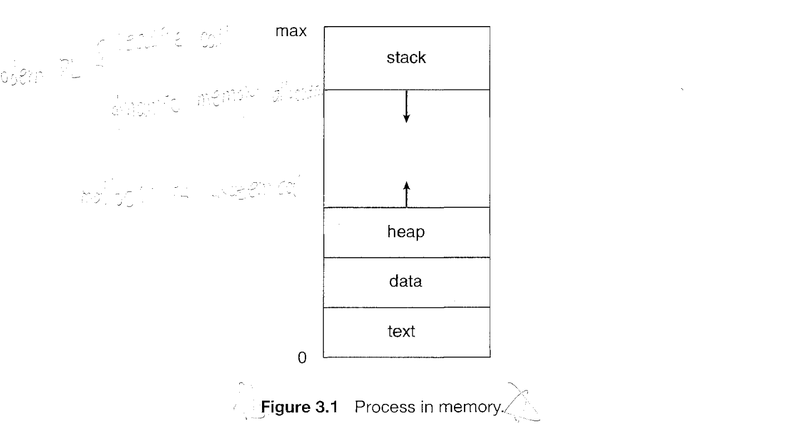
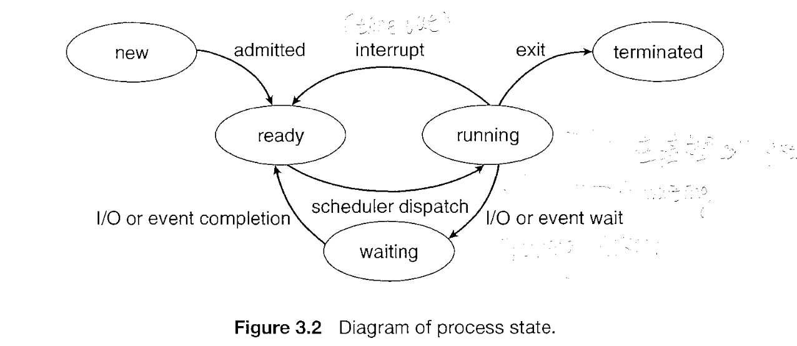
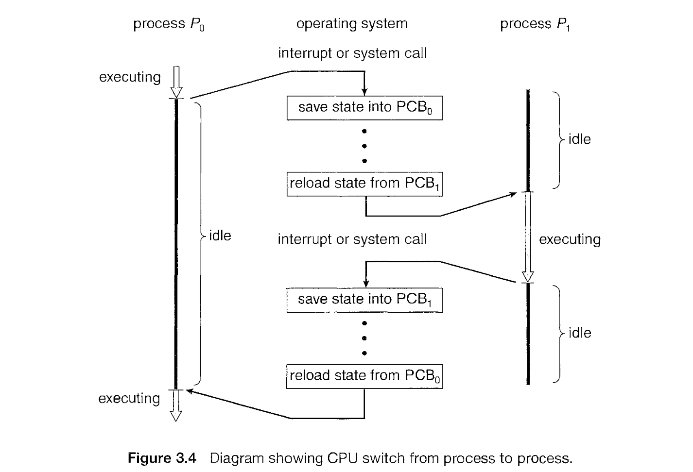
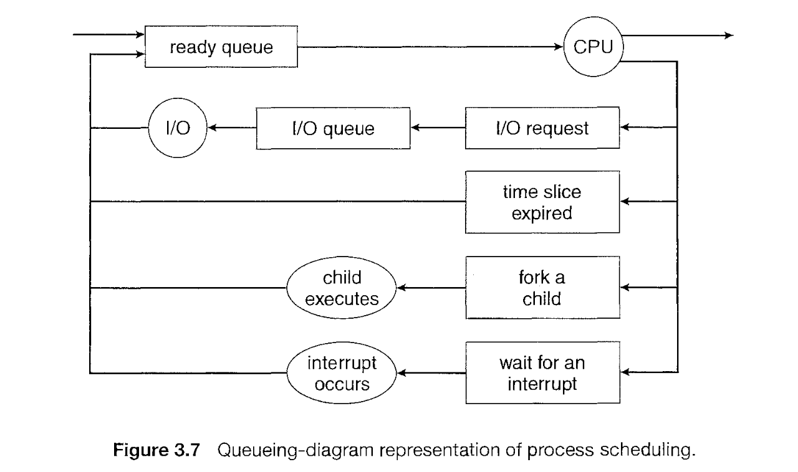
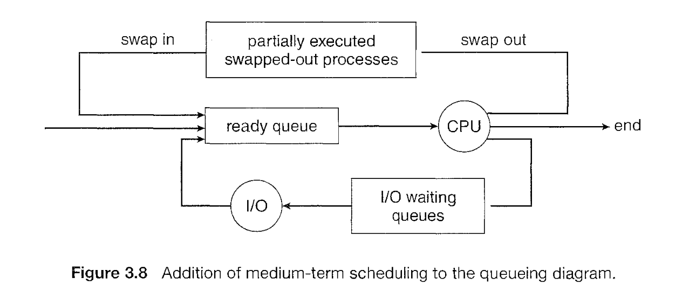

Process
Process: It is a program in execution. A process is the unit of work in a modern time-sharing system.
We can divide processes as system processes executing system code and user processes executing user code.
A batch system executes job while time shared system has user programs or task.
Process
A process is more than the program code, which is sometimes known as the text section. It also includes the current activity, as represented by the value of the program counter and the contents of the processor's registers. A process generally also includes the process stack, which contains temporary data (such as function parameters, return addresses, and local variables), and a data section, which contains global variables. A process may also include a heap, which is memory that is dynamically allocated during process run time.

Process State
Each process is in one of the following state.
- New: The Process is being created
- Running: Instructions are being executed
- Waiting: It is waiting for some event to occure like I/O
- Ready: The process is wating to be assigned to a processor
- Terminated: The process has finished execution

Note: Only one process can be running on any processor at any instant.
Process Control Block(PCB) / Task Control Block
It contains information about process. Some of it is below:
- Process State
- Program Counter: Address of next instruction
- CPU registers: registers vary in number & types as per architecture of CPU. Examples, accumulators, index registers, stack pointers, general purpose registers
- CPU scheduling info: Includes process priority, pointers to scheduling queues, and any other scheduling parameters.
- Memory management info: includes value of base & limit registers, page tables or segment tables depending on memory system.
- Accounting Info: Includes amount of CPU & real time used, time limits, account numbers, job / process numbers etc
- I/O status info: includes list of I/O devices allocated to process, list of open files.
PCB in Linux is represented by task_struct. All task_struct are kept in doubly linked list.

Threads
Process is a program that performs single threads of execution. But modern systems allows a process to have multiple threads of execution & thus to perform more than one task at a time.
On a system that supports threads, the PCB is expanded to include information for each thread.

Process Scheduling
- Object of Multiprogramming: To maximize CPU utilization, CPU should be running all time
- That can be achieved by switching processes on CPU
- Process schedular selects available process for program execution on CPU.
Scheduling queues
The processed enter the system , they are put into job queue, which consistes of all processes in the system. The processes that are residing in main memory and are ready & waiting to execute are kept on list called ready queue.
This queue is generally stored as linked list.

The list of proceses waiting for particular I/O device is called device queue. each device has its own device queue. In above image, we have magnetic tape, disk queues.
Queueing Diagram

A new process is initially put in ready queue. It waits there until it is selected for execution, or is dispatched.
Schedulers
schedular select process from queue for execution.
2 Types of schedulars
- Long term scheduler or Job scheduler: selects processes from mass-storage device (disk) and loads them into memory for execution.
- Short-term scheduler or CPU scheduler: selects from among the processes that are ready to execute and allocates CPU to one of them.
Differece lies in frequenct. Short term scheduler must select process for CPU frequently. The long term schedular controls degree of multiprogramming (number of processes in memory
I/O bound process more time spends doing IO than computation while CPU-Bound is exactly opposite.
Time sharing systems like UNIX and Windows oftern have no long-term schedular but simply put every new process in memory for the short term schedular.
Medium term schedular: it is sometimes advantageous to remove processes from memory (and from active contention for CPU) and thus reduce the degree of multiprogramming. Later process can be reintroduced into memory and its execution can be continued where it left off. This scheme is called swapping.

Context Switch
interrupts cause the OS to change CPU from its current task and to run kernel routine. When interrupt occurs, system needs to save the current context of process running on CPU so that it can restore that context when its processing is done.
When context switch occurs, the kernel perform state save of old process in its PCB and state restore for saved context of new process scheduled to run.
Context switch time is pure overhead, because system does no useful work while switching.
Operations on Processes
Process Creation
- process can create new processes via syscalls like
fork. child processes inherits address space of parent. - child process can call
execsyscall to change memory space with new program. - example, more examples
#define _GNU_SOURCE
#include <stdio.h>
#include <unistd.h>
#include <stdlib.h>
#include <sys/wait.h>
int main(int argc, char const *argv[]) {
pid_t p = getpid();
printf("My Process Id: %d\n", p);
/* create new process */
pid_t child = fork();
if (child == 0) {
printf("I am child!!! (%d)\n", getpid());
} else {
int rv = 0, exit_code = -1;
pid_t c = wait(&rv);
if (WIFEXITED(rv)) {
exit_code = WEXITSTATUS(rv);
}
printf("I am Parent!!! (%d). Child (%d) exited. Exit code: %d\n",
getpid(), c, exit_code);
}
return 0;
}